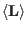
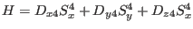

- ic1ion & icf1ion & mcdiff.in file format for
and
 - !! Operator sequence changed to Sa Sb Sc La Lb Lc !!
(was Sa La Sb Lb Sc Lc)
- mcphas got an option -doeps for magnetostrictive strain calculation using parameters
calculated e.g. by makenn -cfph
- there are more examples using cf-phonon interaction
- module phonon: umax restrictino in module phonon done by
u= umax * tanh (u/umax) ... this avoids uniform shifts of the crystal
- makenn option -bvk extended to generate a sample bvk constants table
- anisotropy
 introduced in module so1ion
- made mcphaseexplorer compatible with java 1.8.0 and java 17 at the
same time (see batch mpe for linux for options)
- cif2mcphas changed to put phonon module for sipf files which are nonmagnetic
- mcphas.xyt outputs periodicity of supercell
- spins changed to produce for option -f spins_prim.jvx graphics output
- spinsfromq phases correctly introduced for double and triple q structure